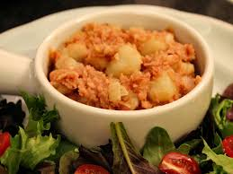

Stovies

Description
Considered to be the quintessential Scottish dish (besides haggis, of course), and although a traditional favorite among many Scottish families, the recipe differs from household to household. Mainly made from the leftover meat or drippings from a previous meal, onions and potatoes.
Traditionally, the Stovies that we know and love today, probably didn't have any actual meat in it. But just utilized the drippings from other meals. Considered by many as a leftover dish, many a household saw the staple stovies monday dinner after their Sunday roast.
Recipes
- 250g (8.8 oz) Roast Beef from previous days roast, or meat of your choice
- 900g (2 lb) Roast Potatoes from previous days roast, or raw potatoes
- 50g (4 tbsp) Roast Drippings from previous days roast, or butter, oil, dripping or lard
- 400ml (2 cups) Stock or leftover gravy with water added to make up the difference
- 2-3tbsp Beef Jelly from previous days roast *Optional - If you put the Beef fat from the roast into a container and leave it to cool overnight it will seperate into drippings and Meat Jelly
- 1 Large onion
Steps
- Start by dicing the onion and any peel and chop any extra potatoes you might need, plus a carrot if using. It’s best to use as many leftover roast potatoes as you can so always cook some extras!
- Roughly dice your beef or substitute meat like sausages. You can see our variations below for some different ideas. Some people also use sausages to make up the difference if you need extra meat.
- Add Beef dripping or a substitute fat to a large hot pan, see our variations about this too! You can use butter, olive oil, or lard.
- Add the onion to the hot fat in a layer at the bottom of the pan, allow them to change colour but not to brown.
- Add the diced meat to the pan on top of the onions once they begin to change colour. Stir together. Note: If using Corned Beef then add at the end and stir through to warm up other than at this point.
- Add potatoes and any other vegetables to the mix, on top of the meat but do not stir together.
- If required make up your stock, adding the beef jelly (this is what separates from the dripping if you leave to cool after having a roast) to the mix and stirring to combine.
- Pour the stock into the pot. It should come to just below the top layer of vegetables so add more or less as necessary. Do not stir but leave everything in layers.
- Bring to the boil and once boiling turn down to a low simmer and cover.
- Cook for 45 mins-60 minutes until the potatoes begin to soften and break down. Test them with a knife to see if they’re ready.
- Season with salt and pepper. Only stir at this point, so that the onion caramelises and the potatoes break down when you stir. The idea is to have some nice crispy bits on the bottom, and for some but not all of the potatoes to break down.
- New potatoes will break down more than roast ones which is why it’s nice to have lots of roast potatoes in it too!
- Serve with oatcakes or crusty bread.